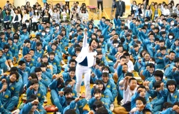

自立塾について
勉強を教えない塾。自立を応援し、社会で生き抜ける人材を育てる教室です。
勉強を教えない塾？【自立塾】って何？

自立を応援し、社会で生き抜ける人材育成をしている教室です。
※「クラス一覧」のページに各クラスの詳細が記載されていますので、ぜひご覧ください。
- 対象年齢
- 小学生～一般人
- 指導形式
- 集団指導（１０～３０人）、個別指導（１対１）
- 指導方針
- 自立塾は、面倒見の良さ、質の高い授業、会費の安さを重視し、ご家庭に喜ばれる塾を目指しております。
指導の4本柱
初級クラス・中級クラスに共通する、自立塾の学びの柱です。
01
世界情勢
学校では学べない日本と世界のできごとを、難しい言葉はわかりやすく説明しながら伝えます。
02
コミュニケーション
討論・ロールプレイングを通して、立場の違う者同志がうまくやっていくための術を身につけます。
03
お金の教育
お金の使い方はもちろん、生き金と死に金の違い、今から知っておかなければならない資産形成まで。
04
プレゼンテーション力
人前で堂々と自分の意見を言える力を、毎回全員が話す授業のなかで育てます。
自立塾の特徴
【 面倒見が良い 】
自立塾は一人一人丁寧に対応し、確実に伸ばしていきます。報告・連絡・相談を非常に大切にしております。
【 ベテラン講師 】
講師歴２０年以上のベテラン講師が、お子さまの指導を担当いたします。
今、何が欠けていて、どうすれば改善できるのかを、お伝えしています。
【 会費が安い 】
自立塾は、ご家庭の方の負担を少しでも減らせるよう、会費を低価格に設定しております。
クラスによっては満席のクラスもございますので、ご注意下さい。
【 完全オンライン化 】
共働きで忙しいご家庭を応援したい為、授業を完全オンライン化しております。
その為、全国各地に塾生がいて参加しています。
代表 挨拶
一般社団法人 自立塾 代表 市川 潤子
市川 潤子
JUNKO ICHIKAWA- 国連JACE編集委員 着任後わずか7ヶ月で取材件数日本一となり副支部長就任
- 栃木県学習支援サポーター養成講座 運営局長（県教育委員会・下野新聞後援）
- 世界3大コンテスト ミス・ユニバースJAPAN審査員
子は、親の背中を見て育ちます。あなたの子育てを、そして人生を、応援させてください。ご挨拶より
初めまして。代表の市川潤子と申します。
当塾のホームページをご覧いただき、誠にありがとうございます。
私は塾生と保護者様へ入塾時に、必ず伝えている言葉がございます。
それは、「私にとって、自立塾は家族です。その大切な人が苦しんでいる時には、全力で支えます。嬉しい時には、泣いて心から喜びます。卒業しても家族ですから、元旦に泊まりに来た生徒もいます。今日からどうぞ宜しくお願いします！」
その日から始まり今日まで皆様のご尽力により、口コミだけで20年以上続けられた事。そして今日まで自立塾を信じて、ついて来てくれた皆様に心より御礼申し上げます。
さてご縁あった皆様へ、ひとつ質問がございます。
「現代の子どもは、何が欠けていますか？」
集中力、考える力、疑問に思い調べる力、伝える力、聞く力、そして、人前で堂々と意見できる発言力、更にはお金の知識や世界情勢への観察眼、それらをどこで教育しますか？
では、現代の大人には何が欠けているのでしょうか。
メディアを鵜呑みにせず正しい情報をつかみ取る観察眼、グローバル化が進む中、世界で活躍出来るコミュニケーション力、更には人生100年時代と言われる中での資産運用の知識。それが無いばかりに、安易にクレジットカードを作ったり、無計画でローンを組んだりしている人が多くはないですか。
メディアに洗脳され、海外の人々に圧倒され交渉も出来ず、そして勉強不足なばかりに老後の不安だけが残る。今の日本人は、残念ながらこういう人が目立ちます。
共働きで、子育てにさく時間が激減している昨今、教育現場やご家庭からの課題は、山積みですね。
過ぎてしまった時間は取り戻せませんが、今からでも間に合うことがあります。
私はお子さまの「自立」を最終目標にしています。そしてそれは、親にとっての「子離れ」でもあります。
つまり、私たち親も子どもたちと同時に学んでいったら、どんな良いことがあるのでしょうか。
子は、親の背中を見て育ちます。あなたの子育てを、そして人生を、応援させてください。
全身全霊をもって応援いたします。
塾長 講演会動画
「わが子のやる気を引き出す」講演会
全国の幼稚園・PTA・教育委員会・歯科医院・病院で開催中
あなたの一歩が、
気になることを、まずは話してみてください。お子さまのこと、ご家庭のこと、これからのこと。
無理におすすめすることはありません。どうぞお気軽にご連絡ください。